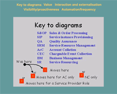

Trends in Activity Characteristics
Key Messages
Key messages on the trends of OS activities are tabled below. You can explore the various planes of trends in figure 11.
Key Messages
- OS activities will become more visible to external systems/bodies, placing increased requirements on operational support activities but also on the visibility of previously hidden/embedded policies.
- Some current OS activities will migrate to be handled by the customer themselves, in particular in the area of sales and order processing.
- Quality assurance, measurement and control is likely to be more complex but increasingly necessary as a competitive edge.
- The closer to the end-user, the greater the requirements on active business management. Timeliness, efficiency and flexibility will become more critical.
- There is a general trend towards automation, enabled by well-defined interfaces at business-critical areas of interaction and co-operation.
- The ‘functionality’ of the Operational Support will remain the same, no new activities have been identified, and none have disappeared, but their nature has changed.
Trend Diagrams

Fig 11. Trends in Characteristics
Trend Summary
|
Operational
Support Activity
|
Nature
of change
|
|
Sales
& Order Processing
|
More automated: Greater regulatory requirements, e-commerce push - key accounts retain personal touch. Pre-processed orders. More time-critical: competition, customer expectation, instancy, More proactive: proactive sales – competition. May also see growth in proactive sales (e.g. free service for 10 days when buy a CD). More interactive: role dependent - greater interaction with business management if the portfolio is changing, Order processing cross enterprise roles |
|
Service
Instance Provision
|
More automated: on-line subscription, competition push automation, expected volume and cost control for competitive position. Rise in distributed system technologies. AC kit allows remote configuration. More adaptive: customisation and personalisation require more adaptive process and/or increased pressure on system designers and integrators. Could have automated routine process underneath. Less deterministic and able to change with product / service. More time-critical: Customer expectation for instancy, and lack of ‘time’ in peoples lives. More externalised: Technology (e.g. TINA world). potential for resellers (NSP) to do provision themselves via call-off contract. Automation and implementation may not encourage distinction between internal and external order. |
|
Quality
Assurance
|
More automated: Self diagnosing components. Automation needed to save costs. More adaptive: More types of service and component sets for service. Shorter lifecycles need adaptive monitoring. More externalised: More parties involved |
|
Service-Resource
Management
|
More automated: Software-driven switching - overall trend in remote management, inbuilt redundancy. Exceptions handled by people but critical faults no longer so critical as ‘backup’so less people involved Less time-critical: less time-critical because more redundancy. More best effort as resource themselves become more intelligent equipment and systems. More proactive: Proactive for survival. NC more proactive in forecast and predict. But ‘routines’ looking after kit. More valued by others: greater interdependency with other roles players. Higher value for others implies higher requirement on pro-activity. |
|
Account
Collation
|
More externalised: other parties involved, and tariff structures will be a selling point in market. More interactive: E.g. credit-card validation. Need for better cashflow and the use of e-commerce between businesses. |
|
Chargeable
Event Collection
|
More externalised: Other parties involved More adaptive: Adapting to new charging models and Wider (global European) markets. |
|
Service
Resourcing
|
More automated: Move to bulk order/drip deliver, drip payment. Enablers, standardised interfaces, e-commerce, collaboration.. More proactive: Dynamic market means move to resource "ready-for" rather than JIT. Potential greater risk/reward ratio. NC= technology push, less proactive, investment greater but build times longer so more proactive. SP= demand pull, more proactive, investment less. More valued by others: co-operation required between players, reliance of whole industry on ‘capacity’ being available. More timecritical: Competition more real. Service being marketed has shorter lifespan so time to market is shorter. Poss less so for AC/NC. |
|
Business
Management
|
Larger scale: More churn and market shifts, less time to launch services to meet market need More timecritical: More churn and market shifts, less time to launch services to meet market need. More externalised: Outsourcing arrangements, alliances and co-operation with other roles. More valued by others: Greater interdependence between roles and players. |
© Copyright British Telecommunications plc 1999